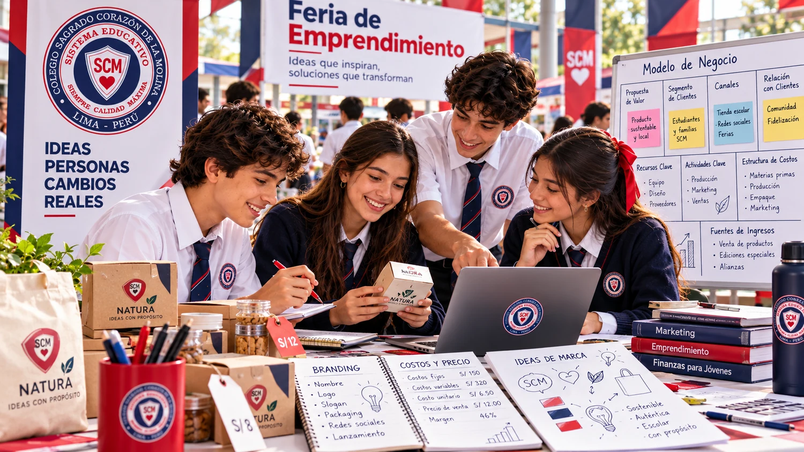
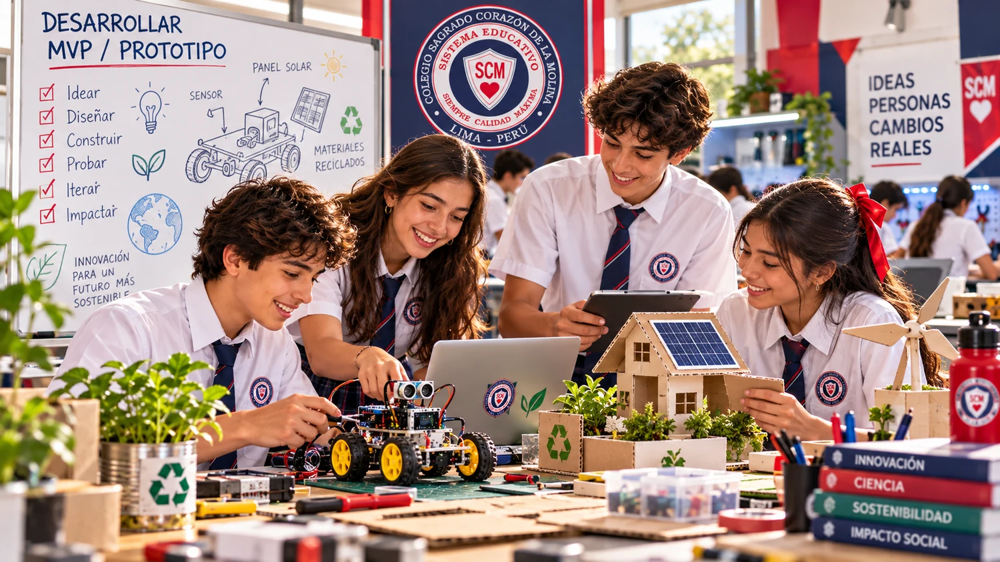
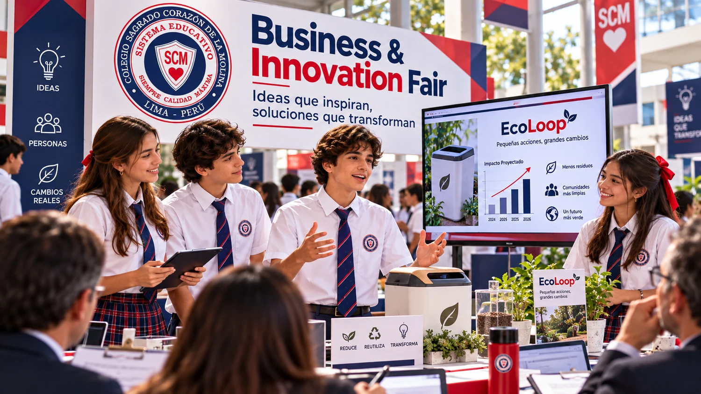
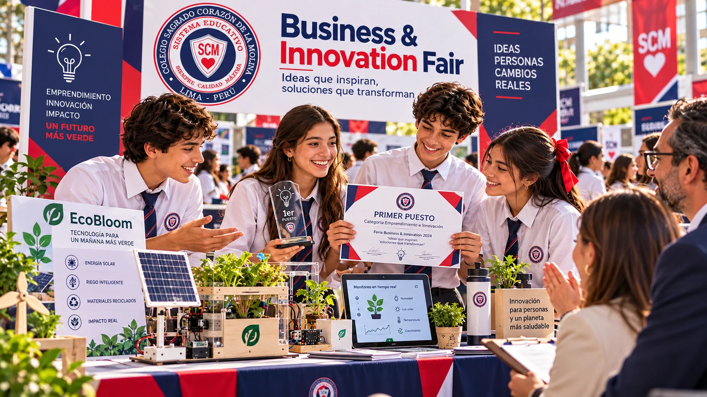

SCM · SECUNDARIA 2026BUSINESS & INNOVATION FAIR
Construye una propuesta que demuestre valor con evidencia.
Esta plataforma organiza todo lo que necesitas para investigar una oportunidad, validar al cliente, desarrollar un MVP, modelar el negocio y sustentar tu proyecto ante el jurado.
💡
IDEAS QUE INSPIRANSoluciones que transforman
PREGUNTA CENTRAL DEL PROYECTO¿Qué oportunidad identificamos, qué evidencia demuestra que existe y por qué nuestra solución genera valor para un cliente objetivo?
9etapas del emprendimiento
20puntos máximos
2 minpitch aproximado
8reconocimientos
TU RUTA ORGANIZADA
Avanza por cuatro bloques de trabajo
No necesitas recorrer todo de una vez. Usa estos bloques para ubicar rápidamente qué debes hacer en cada momento.
🔎
BLOQUE 1
Descubre y valida
Identifica la oportunidad, comprende al cliente y organiza la ruta de trabajo.
🧪
BLOQUE 2
Construye y presenta
Prepara el stand, fortalece el MVP y practica cómo defender tus decisiones.
📈
BLOQUE 3
Evalúa y mejora
Revisa los criterios, comprueba que tu equipo esté listo y usa herramientas de apoyo.
🎮
BLOQUE 4
Practica y completa
Refuerza conceptos con actividades interactivas y completa tu ruta para obtener el diploma.
⚡
IDEA CLAVEEl proyecto debe mostrar un proceso completo, no solo un producto final.
🔎 Oportunidad→👥 Cliente→💡 Solución→🧪 MVP→💎 Valor→📣 Marca→💼 Negocio→🎤 Pitch
01
EL RETO
Desarrollar un emprendimiento cercano a la realidad
Cada equipo parte de una necesidad, problema u oportunidad relevante, la investiga y valida, diseña una solución innovadora, desarrolla un prototipo funcional o MVP, analiza su viabilidad y presenta una propuesta empresarial sustentada con evidencia.
PREGUNTA GUÍAOportunidad + evidencia + cliente objetivo + valor.
02
QUÉ SE ESPERA DEL EQUIPO
Autonomía, evidencia y responsabilidad compartida
Identificar y analizar una necesidad, problema u oportunidad con potencial de emprendimiento.
Investigar y validar la necesidad y al cliente objetivo mediante entrevistas, encuestas, observación, datos y/o pruebas.
Diseñar una solución innovadora y desarrollar un prototipo funcional o MVP.
Probar la propuesta con usuarios, recoger retroalimentación y documentar mejoras.
Definir una propuesta de valor clara y diferenciada.
Construir una identidad de marca coherente y una estrategia básica de comunicación y marketing.
Analizar cliente, costos, precio, canales, comercialización, viabilidad y posibilidades de crecimiento.
Diseñar un stand con enfoque empresarial que comunique problema, solución, proceso y valor.
Preparar un pitch de aproximadamente 2 minutos y defender la propuesta ante preguntas del público y jurado.
Demostrar liderazgo, colaboración, negociación, toma de decisiones y responsabilidad compartida.
Responsabilidad del estudiante y apoyo familiar
En Secundaria se espera una gestión mucho más autónoma. La familia puede apoyar con organización, logística, materiales, contactos, supervisión de riesgos y preguntas para ensayar el pitch; no debe sustituir el trabajo intelectual, creativo ni la sustentación del equipo.
03
RUTA DEL EMPRENDIMIENTO
Las nueve etapas, de la oportunidad a la sustentación
Detectar
Identificar una necesidad, problema u oportunidad relevante.
Investigar y validar
Obtener evidencia y comprender al cliente objetivo.
Idear y diferenciar
Generar soluciones y seleccionar una propuesta innovadora y viable.
Desarrollar MVP / prototipo
Construir una versión funcional que permita probar la solución.
Probar y mejorar
Validar con usuarios, analizar retroalimentación y documentar mejoras.
Definir la propuesta de valor
Precisar para quién es, qué resuelve y por qué es diferente.
Construir marca y estrategia
Definir identidad, posicionamiento, comunicación y marketing.
Modelar el negocio
Analizar costos, precio, cliente, canales, comercialización, viabilidad y crecimiento.
Lanzar y sustentar
Preparar el stand, presentar el producto o servicio y defender la propuesta con un pitch.
OPORTUNIDAD → CLIENTE → SOLUCIÓN → MVP Y VALIDACIÓN → PROPUESTA DE VALOR → MARCA → MODELO DE NEGOCIO → PRESENTACIÓN

04
REQUISITOS DEL STAND
El stand debe explicar el proceso completo

05
PREPÁRENSE PARA SUSTENTAR
No basta mostrar un buen producto: hay que justificar decisiones
Todos los integrantes deben conocer el proyecto y poder defenderlo con evidencia.
RETO EXPRESS
Ensaya en 2 minutos
Usa el temporizador de Recursos para practicar un pitch breve, claro y sustentado.

06
CRONOGRAMA OFICIAL
Fechas de trabajo y presentación de la feria
Organiza el proyecto en tres momentos: desarrollo, culminación y presentación en la feria. Las fechas y horarios que se muestran a continuación corresponden al documento oficial del evento.
DEL12–30OCTUBRE
FASE 1
Desarrollo
🕐 1:50 a 3:00 p.m.
Investigación, selección de solución, diseño, prototipo y primeras pruebas.
DEL02–03NOVIEMBRE
FASE 2
Culminación
🏫 Programa HOME · 7:50 a 9:10 a.m.
1.ª y 2.ª hora
Mejoras, marca, precio, preparación del stand, material de comunicación y presentación breve.
DÍAS04–05NOVIEMBRE
FASE 3
Feria
Presentación, demostración, comercialización y sustentación ante visitantes y jurado.
CRONOGRAMA DE PRESENTACIÓN
Distribución por fecha, grado y sección
| Fecha | Grados / Secciones | Horario |
|---|---|---|
| Miércoles 04 de noviembre | 1.º, 2.º, 3.º y 4.º Rubens | 3:00 a 6:00 p.m. |
| Jueves 05 de noviembre | 4.º Botticelli, 5.º Dalí, 6.º, 5.º y 4.º Schubert – Primaria | 3:00 a 6:00 p.m. |
07
RÚBRICA · 20 PUNTOS
Cinco criterios, cuatro niveles de desempeño
Cada criterio se valora de 1 a 4 puntos. Abre cada bloque para revisar qué se espera.
Oportunidad, investigación y validación4 pts máx.
4 · Excelente: Identifica una oportunidad relevante y sustenta con evidencia clara la necesidad y el cliente objetivo.
3 · Logrado: Identifica una necesidad concreta y presenta evidencia básica de validación.
2 · En proceso: La investigación o validación es limitada.
1 · Inicio: La necesidad u oportunidad no está claramente sustentada.
Innovación y propuesta de valor4 pts máx.
4: Solución innovadora, diferenciada y propuesta de valor sólida para el cliente.
3: Solución pertinente y propuesta de valor comprensible.
2: Diferenciación o propuesta de valor parcialmente desarrollada.
1: Solución tradicional, poco clara o que no responde adecuadamente al usuario.
MVP / prototipo, validación y mejora4 pts máx.
4: MVP o prototipo funcional, probado con usuarios y mejoras fundamentadas.
3: Prototipo funcional con pruebas y alguna mejora.
2: Prototipo básico con validación limitada.
1: Prototipo incompleto o sin evidencia de pruebas ni mejora.
Modelo de negocio y viabilidad4 pts máx.
4: Define con claridad cliente, costos, precio, estrategia comercial, canales y viabilidad.
3: Define principales elementos comerciales y demuestra viabilidad básica.
2: Presenta algunos elementos del negocio con poca sustentación.
1: No establece claramente cómo funcionaría o se comercializaría el emprendimiento.
Marca, pitch y sustentación4 pts máx.
4: Identidad coherente y pitch convincente; responde con seguridad sobre diferenciación, viabilidad, impacto y crecimiento.
3: Presenta adecuadamente el proyecto y responde la mayoría de preguntas con claridad.
2: El pitch comunica la idea, pero presenta dificultades para argumentar o responder.
1: Presentación poco clara y sustentación insuficiente.
08
RECONOCIMIENTOS
Ocho formas de destacar
Mejor Solución a una Necesidad o Problema Real
Emprendimiento Más Innovador
Mejor Marca e Identidad Visual
Mejor Diseño y Experiencia de Stand
Mejor Presentación o Pitch
Mejor Estrategia de Marketing y Comunicación
Mayor Impacto Social o Ambiental
Emprendimiento del Año · SCM Grand Award

09
CHECKLIST FINAL
¿Tu equipo está listo para la feria?
Marca cada punto cuando tu equipo pueda demostrarlo. Completar los 8 ítems es parte de tu progreso hacia el diploma.
“Una propuesta sólida no solo se ve bien: demuestra que existe una oportunidad, que la solución fue validada y que el equipo puede defender por qué genera valor.”
10
RECURSOS DE APOYO
Herramientas prácticas para preparar el proyecto
Estas herramientas son complementos interactivos de la plataforma para practicar los requisitos del documento.
Temporizador de pitch
02:00
Calculadora rápida
Ingresa tus datos.
Constructor de propuesta de valor
Completa los campos.
Mini-plantillas
J1
JUEGO INTERACTIVO
Sopa de letras · conceptos clave
Haz clic en la primera y última letra de cada palabra. Se aceptan líneas horizontales, verticales y diagonales.
Encuentra
0 encontradas
J2
JUEGO INTERACTIVO
Memoria · etapa + propósito
Relaciona cada etapa con su descripción. Completa las 9 parejas para superar el juego.
J3
JUEGO INTERACTIVO
Crucigrama · emprendimiento y evaluación
Pistas
Q10
EVALUACIÓN INTERACTIVA
Cuestionario final · 10 preguntas
🧠
Comprueba cuánto dominas la guía de la feria
Responde las 10 preguntas basadas en el documento oficial. Necesitas 8 respuestas correctas de 10 para completar esta actividad.
Meta: 8/10
Responde las 10 preguntas y luego comprueba tu resultado.
META
DIPLOMA DIGITAL
Completa tu ruta y obtén tu certificación
♛
Tu diploma aún está bloqueado
Explora todas las secciones, completa los 3 juegos, aprueba el cuestionario con al menos 8/10, revisa Recursos y marca el checklist final.
0%
SCM BUSINESS & INNOVATION FAIR
COLEGIO SAGRADO CORAZÓN DE LA MOLINA
DIPLOMA DE FINALIZACIÓN
Se otorga aEstudiante
Secundaria
por haber completado la Ruta de Aprendizaje de la Feria de Emprendimiento e Innovación, demostrando compromiso con la investigación, la validación, la creatividad y la sustentación basada en evidencia.
“Ideas que inspiran, soluciones que transforman”
Si el generador PDF no carga por conexión, se abrirá una versión lista para imprimir como PDF.